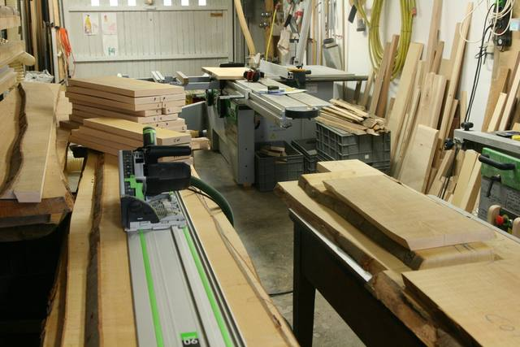
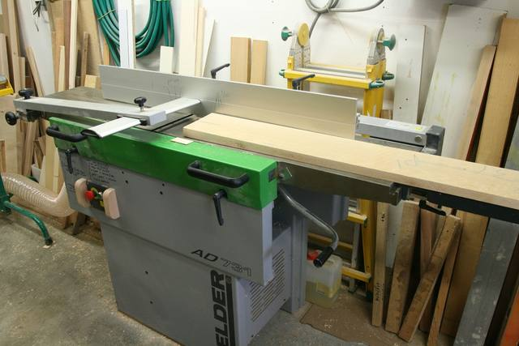
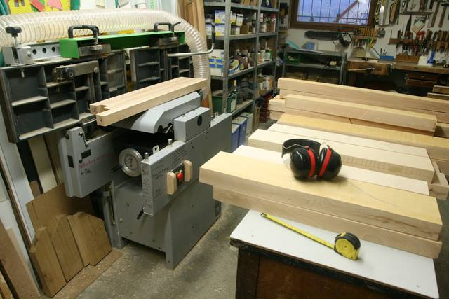
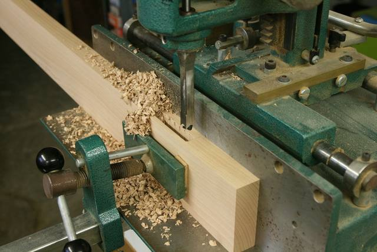
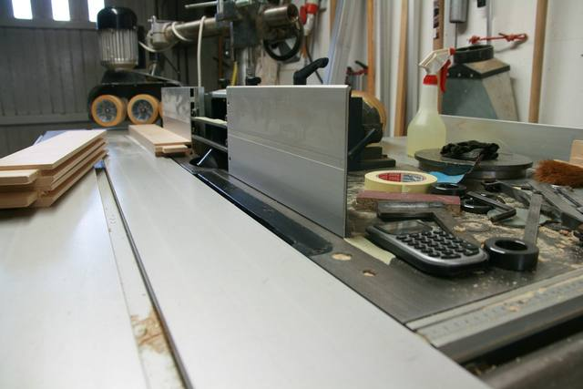
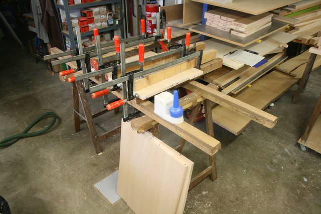
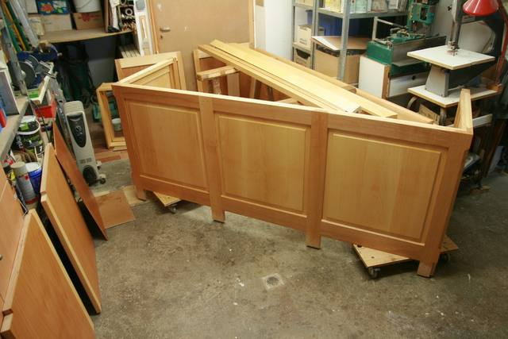
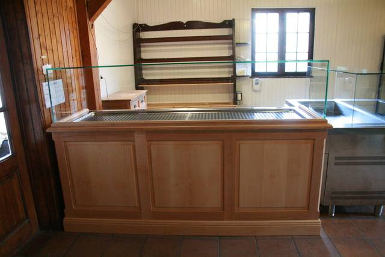

L’atelier
Lucas Bléger, ébéniste à Munster
Presti'bois est un atelier artisanal du travail du bois. Les agencements y sont entièrement réalisés sur mesure, le mobilier y naît traditionnel ou contemporain, massif ou plaqué, huilé, verni ou laqué.
Parcours : [à compléter : formation, année de création, ce qui lui plaît dans ce métier]
Une fabrication, étape par étape
De la planche au comptoir
Un comptoir de boulangerie, photographié dans l’atelier à chaque étape.

1 / 8
Débit
Les planches sont choisies, puis coupées un peu plus grandes que les pièces finies.

2 / 8
Dégauchissage
Une face et un chant sont dressés : bien plans, parfaitement d’équerre.

3 / 8
Rabotage
Chaque pièce est amenée à son épaisseur et à sa largeur exactes.

4 / 8
Mortaisage
Les mortaises sont creusées. Elles recevront les tenons qui tiennent le meuble.

5 / 8
Toupillage
La toupie façonne les rainures, les feuillures et les moulures.

6 / 8
Collage
Les pièces sont assemblées, collées, puis serrées le temps de la prise.

7 / 8
Finition
Le meuble est ajusté et poncé, puis le bois reçoit sa protection.

8 / 8
En place
Le comptoir de boulangerie, terminé et installé.
La prochaine planche est peut-être la vôtre.
Du premier croquis à la pose, un seul interlocuteur.